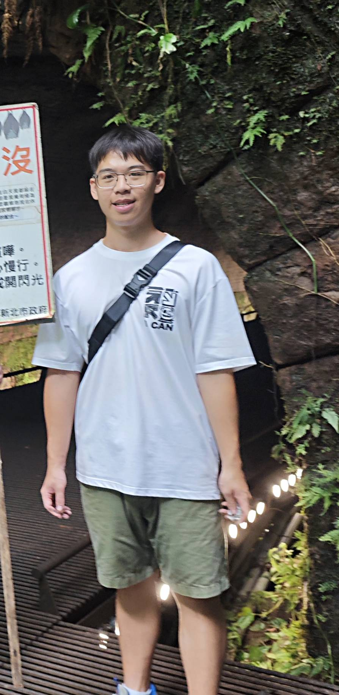
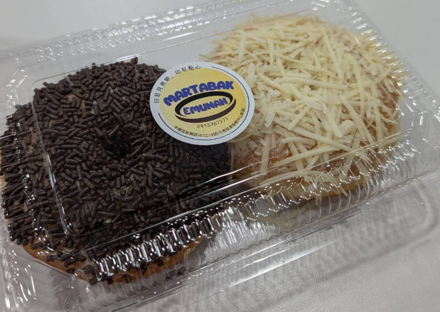

關於我

我是陳與喆，目前就讀中原大學資訊管理學系二年級。我個性滿開朗的，也很喜歡和別人互動，所以通常都能很快跟大家打成一片。 平常我對新事物都滿有興趣的，只要有機會就會想去嘗試看看，也願意花時間去學習，讓自己慢慢變得更好。我很喜歡認識不同的人、聽他們的故事， 因為每個人的經歷都不一樣，從中可以學到很多新的想法，也讓自己的視野更廣。對我來說，每一次的經驗不管是順利還是不順利，都是讓自己成長的機會。 我也會去反思哪些地方可以做得更好，讓自己一直進步。未來我希望能持續挑戰自己，在專業能力和人際相處上都變得更成熟、更有實力。
聯絡方式
LINE ID：jay095658586
手機：0979361539
興趣
書
我從國小開始就喜歡看書，每次一到下課，就會衝到圖書館看書。隨著我長大之後，像是大家熟知的金庸小說我幾乎每個系列都看過。 還曾參加圖書館借閱書籍數量的活動，拿到不錯的成績。
球
我的興趣是打羽球。平常有空的時候，我很喜歡到球場打球，不管是和朋友一起對打，還是單純練習基本動作，都讓我覺得很開心。 羽球是一項需要速度和反應的運動，在場上要隨時注意球的落點並快速移動，因此過程中節奏很快，也很有趣。 我平常會練習發球、殺球和接球等技巧，讓自己的動作更穩定。
技能專長
CSS
70%
Python
65%
Java
70%
HTML
82%
學經歷
- 志工服務
我們到木匠之家參與一日志工活動，分配到的任務是協助發放宣傳傳單。透過這項工作， 我們向路過的民眾介紹他們正在進行的公益團購，希望能吸引更多人參與支持。雖然只是簡單的發傳單， 但能為公益盡一份心力，讓我們感到有意義，也更了解木匠之家所做的善事與努力。

- 中壢火車站探訪
這門課程以永續發展為主題，老師安排我們前往中壢火車站附近的東南亞街區進行實地探訪， 讓我們能親自觀察並感受與台灣本地文化不同的生活樣貌。在街區中，我看見了各式各樣來自東南亞的店家 、語言與特色裝飾，整個氛圍充滿異國風情，也讓我對多元文化有了更深的理解。在走訪過程中，我還發現了一項特別的東南亞美食──月亮餅。 它的外型看起來相當可愛，吃起來甜甜的，非常好吃。透過這次課堂安排的實地探索活動，我不只接觸到新的文化， 也更能體會多元社會中不同族群共存的價值與意義。這是一段非常有收穫的學習經驗。

- 政府舉辦暑期打工
暑假時我參加了政府舉辦的暑期工讀計畫，被分派到消防局服務。原本以為能近距離看到消防隊員出勤救火的情景， 結果實際的工作內容主要是協助打掃環境與整理內部空間，偶爾才會幫忙處理一些簡單的文件。雖然有點單調， 與想像中刺激的消防工作差距很大，但在整理環境的過程中，我也看到了許多平常不會接觸到的消防器具與設備，對消防工作有了更深入的了解， 覺得還算值得。此外，消防隊員們都非常友善，不只耐心回答我對消防工作的好奇，有時還會請我吃點心，讓工讀的日子變得更溫暖。 整體來說，這次工讀雖然和原本期待不同，但仍帶給我不少新鮮的體驗與收穫。